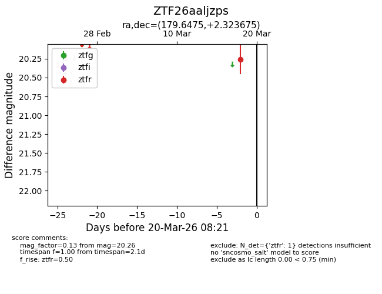
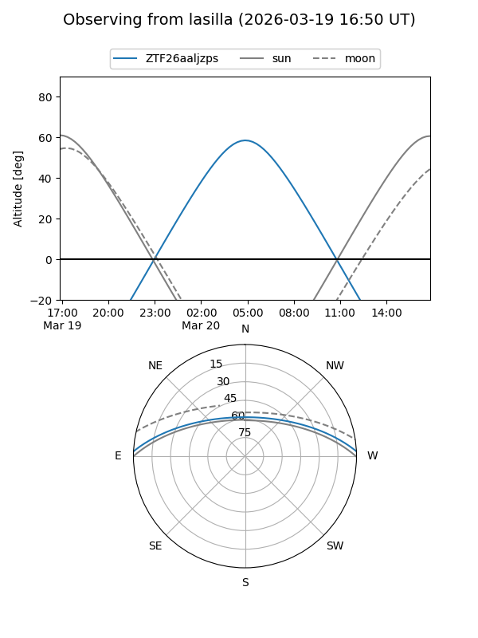
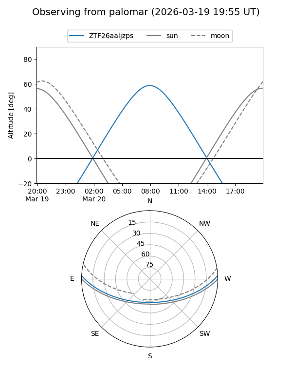

ZTF26aaljzps
Target ZTF26aaljzps at 2026-03-20 08:23
Aliases and brokers:
FINK: link
Lasair: link
ALeRCE: link
alt names
ZTF26aaljzps (ztf,fink_ztf)
Coordinates:
equatorial (ra, dec) = 179.6475,+2.32367
equatorial (HMS+DMS) = 11:58:35.41,+02:19:25.23
galactic (l, b) = (273.6633,+62.15403)
Flags:
Photometry:
last ztfr=20.26
1 ztfr detections
Lightcurve

Visibility


Additional plots